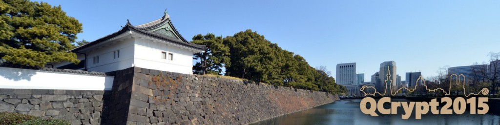
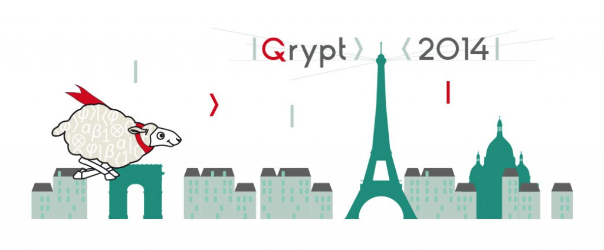
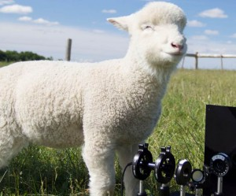
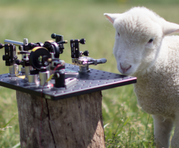
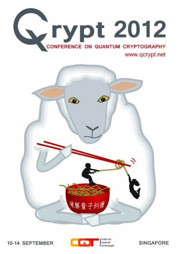
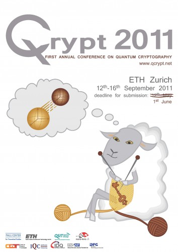

Previous Conferences 5th QCrypt: September 28 – October 2, 2015, in Tokyo  4th QCrypt: September 1–5, 2014 in Paris  3rd QCrypt: August 5–9, 2013 in Waterloo 2nd QCrypt: September 10–14, 2012 in Singapore  1st QCrypt: September 12–16, 2011 in Zurich  .